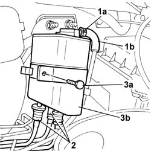

1080E10 TANK FUEL VAPOUR SEPARATOR - R + R
- Path
- Procedures > 10 ENGINE UNIT > 1080 EXHAUST EMISSION CONTROL SYSTEM > 1080E EVAPORATION CONTROL SYSTEM > 1080E10 TANK FUEL VAPOUR SEPARATOR - R + R
- Kind
- repair procedure (removal / refitting; the operation number is the code)
- Applies to
- engines: 2.0 16V; all production periods
- Interactive page
- https://sloeber94.github.io/elrnDB-fDct/en/#/244000914
Applies to: engines: 2.0 16V; all production periods
 Removing
Removing
 Refitting
RefittingSee in Op. 1048A14
1. Release the retaining springs (1a) and move the pipe (1b) aside.
2. Disconnect the rapid connectors at the bottom of the separator.
3. Undo the bolt fixing the bracket (3a) and remove the fuel vapour separator from the lower section (3b).

Applies to: engines: 2.0 16V; all production periods
Refitting
Removing- Place the fuel vapour separator in position.
- Tighten the bolt fixing the bracket.
- Connect the rapid connectors at the bottom of the fuel vapour separator.
- Fit the pipe and restore the band removed previously.
See in Op. 1048A14